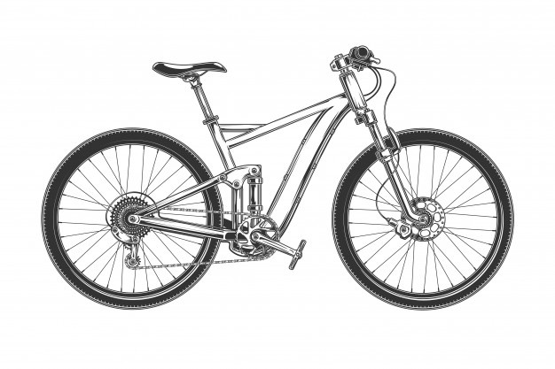

Virtual Cycling
Time till 26th January-
Due to Covid-19 situation, the 72-hour cycling plan of 9th-A could not be conducted, so this site is a little replacement for it. The cycle will keep going till 26th January, when the timer stops.
